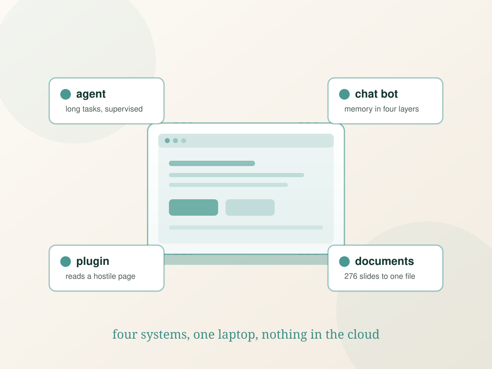

Make it run unattended
A process that works while I am asleep needs a supervisor, a restart policy and logs that say why it died. Most of my work is that, not the happy path.
Jiang Sirui · Computer Science, BiUH
Most of what I make is local, unglamorous and used by exactly one person: an agent framework on my own laptop, a chat bot that answers my friends, a plugin that reads the pages my browser refuses to hand over. Each one taught me a failure mode I had not met before.

A process that works while I am asleep needs a supervisor, a restart policy and logs that say why it died. Most of my work is that, not the happy path.
The error message is a symptom. Twice this year the culprit was a broken filesystem and a permission list, not the code that reported it.
Every project here has notes: what I expected, what happened, what I changed. If I cannot explain a bug, I did not understand it.
Running an agent harness on a laptop, and the supervisor that restarts it when the session dies but the process lives on.
An OneBot client with layered memory, a personality that stays in character, and a hard line around what it will not say.
Extracting video metadata from a page that obfuscates its own HTML, by letting the page make its own API call and keeping the answer.
A pipeline that reads 276 pages of lecture slides and produces a reviewed, typeset document — including the pages where the maths is pixels, not text.
Fourteen components built from code in Three.js — no downloaded model, no textures off the shelf. Click a part and it lifts out; the rest is orbit, zoom and a parts list that stays in sync with the scene.
A volcanic hot spring town built inside a porcelain cup: a cone that glows and throws embers, lava that runs to the edge, five steaming springs, an inn or seven, red bridges, bamboo, a small shrine, and a sky of drifting cloud. Every vertex is placed by code.